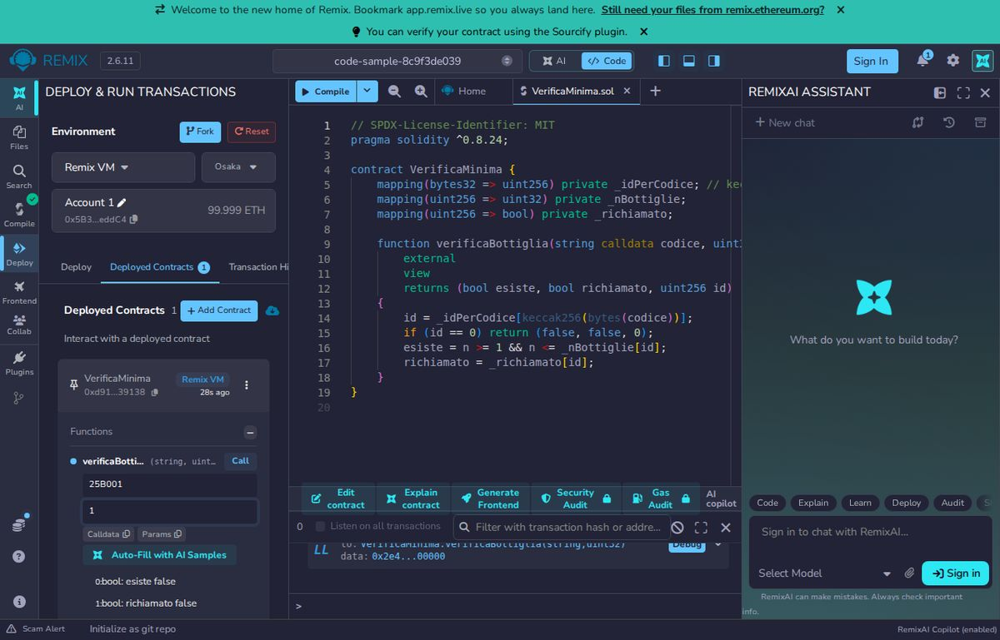

8. The QR code and the public page
The QR is like a booking reference: alone it says nothing, but at the right counter it shows your file.
The address
Each bottle has a web address shaped like /b/<lot>/<n>, for example /b/25B001/12. The QR is just that address drawn as small squares. Any QR library makes it, one line per bottle, starting from the site's public address.
The verification function
A view function reads data and costs the caller nothing: no wallet, no signature.
// SPDX-License-Identifier: MIT
pragma solidity ^0.8.24;
contract VerificaMinima {
mapping(bytes32 => uint256) private _idPerCodice; // keccak256(code) => id, 0 = unknown
mapping(uint256 => uint32) private _nBottiglie;
mapping(uint256 => bool) private _richiamato;
function verificaBottiglia(string calldata codice, uint32 n)
external
view
returns (bool esiste, bool richiamato, uint256 id)
{
id = _idPerCodice[keccak256(bytes(codice))];
if (id == 0) return (false, false, 0);
esiste = n >= 1 && n <= _nBottiglie[id];
richiamato = _richiamato[id];
}
}Line by line
- Three helper lists: from the code (turned into a number with
keccak256) to the lot number, then bottles and recall for each lot. In the real contractcreaLotto,imbottigliaandrichiamafill them. viewmeans "read-only"; it returns three named values.- If the code is unknown the id is 0 and we answer "does not exist".
esisteis true ifnis between 1 and the lot's bottle count: this is the third check of chapter 4.richiamatodrives the red badge.
Calling it from the page
import { Contract, JsonRpcProvider } from "ethers";
// Public values of the demo: the contract on Polygon Amoy (a test network) and a free public RPC address.
const CONTRACT_ADDRESS = "0x158a5026eD83888a443f2bA921Faf07C2D04bE0E";
const RPC_URL = "https://polygon-amoy-bor-rpc.publicnode.com";
const abi = ["function verificaBottiglia(string codice, uint32 n) view returns (bool esiste, bool richiamato, uint256 id)"];
const contract = new Contract(CONTRACT_ADDRESS, abi, new JsonRpcProvider(RPC_URL));
// From the page address, for example: /b/25B001/12
const [, , lot, n] = window.location.pathname.split("/");
const [esiste, richiamato] = await contract.verificaBottiglia(lot, Number(n));Line by line
- We import ethers, a library that talks to the chain.
CONTRACT_ADDRESSandRPC_URLare the public values of the demo: the contract address on Polygon Amoy and a free RPC address.- The
abiis the list of functions we want to call, in readable form. Contractjoins the contract address, the abi and a connection to the network.- From the browser address we split the lot code and the bottle number.
- We call
verificaBottigliaand receive the answers to display.
In the demo this step is not even needed in the browser: the backend answers /api/pubblico/bottiglia/<lot>/<n> with the verification already done, and the page shows the badge.
Try it now
Three ways to try this chapter straight from your browser: the contract in Remix, the check page reading the real chain in StackBlitz, the Python notebook in Colab.
StackBlitz and Colab run in the browser; Colab asks for a free Google account. Free, runs in your browser, public data only.
Remix is in English. If the console shows a red "Could not resolve package version" message while the page opens, press Compile once more: the OpenZeppelin library is downloaded and the green tick appears.
What you should see
Remix: a freshly published contract has empty lists, so verificaBottiglia answers false, false, 0 for any lot (in the real contract creaLotto, imbottiglia and richiama fill them). Compiling with Hardhat:
Compiled 1 Solidity file successfully (evm target: cancun).
What you should see
StackBlitz and notebook: the same function on the real contract of the demo. In StackBlitz the box turns green for lot 25B001, bottle 12:
GREEN: bottle 12 of lot 25B001 is valid (token 5)
lot 25B001 bottle 1 exists=True recalled=False token id=5
lot 25B001 bottle 360 exists=True recalled=False token id=5
lot 25B001 bottle 361 exists=False recalled=False token id=5
lot UNKNOWN bottle 1 exists=False recalled=False token id=0
Try it yourself
With the full contract in your Hardhat project, write a test that creates a 5-bottle lot and checks that verificaBottiglia("25B001", 5) gives esiste = true and verificaBottiglia("25B001", 6) gives false.
What you learned
- The QR contains only the address /b/lot/number.
- A view function reads the chain for free and without a wallet.
- The bottle number must lie between 1 and the number of bottles filled.